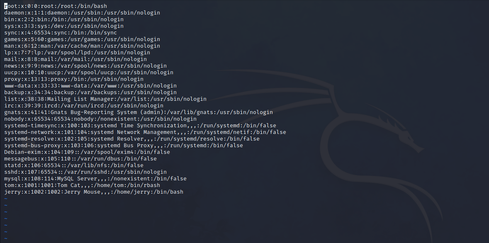

DC-2
DC-2靶场渗透
0x01 靶场简介原文
与DC-1非常相似，DC-2是另一个专门建造的易受攻击的实验室，目的是在渗透测试领域获得经验。
与最初的DC-1一样，它的设计考虑到了初学者。
Linux 技能和对 Linux 命令行的熟悉是必须的，对基本渗透测试工具的一些经验也是必须的。
就像DC-1一样，有五个标志，包括最后一个标志。
再一次，就像DC-1一样，标志对初学者很重要，但对有经验的人来说并不那么重要。
简而言之，唯一真正重要的标志是最终的标志。
对于初学者来说，谷歌是你的朋友。嗯，除了所有的隐私问题等。
我还没有探索实现root的所有方法，因为我废弃了我一直在研究的先前版本，除了基本操作系统安装之外，我完全从头开始。
0x02 环境搭建
本次环境为NAT下
攻击机为kali，IP：192.168.86.129
靶机下载官网
用vmware打开即可，会提示导入失败，点重试就行
0x03 信息收集
1.找到目标IP
kali下用nmap -sP找到本网段下存活主机
.1是我的主机，.2是网关，.192是kali本身，.254是DHCP服务器，那就是192.168.86.166了，或者查看DC-2的mac地址，也能确定
2.扫描开放端口
1 | |
这里只开放了80端口，那就访问一下吧
3.访问web页面
直接访问，访问会出错，想不通为什么
看教程发现要改hosts，后来发现官方文档有过说明了
发现flag：
你通常的单词表可能不起作用，所以，也许你只需要保持冷静。
密码越多越好，但有时你无法赢得所有密码。
以一个身份登录以查看下一个标志。
如果找不到，请以其他身份登录。
根据提示，我们需要使用cewl来抓取单词组成字典。cewl 简单来说，就是一款以爬虫模式在指定的URL上收集单词的工具，可以将它收到的单词组成一个字典，用来爆破使用。
0x04 开渗
1.初步思路
首先要生产一个字典，而且要登录，那就搜集一下账户和密码，做个字典吧
2.收集单词
根据提示用cewl收集单词当密码本
1 | |
3.尝试登录
这里用到的工具是wpscan，这是一款专门针对wordpress的扫描工具，采用ruby语言编写，能够扫描worpress网站中包括主题漏洞、插件漏洞以及wordpress网站本身存在的漏洞。wpscan还可以扫描wordpress网站启用的插件和其他功能。
1 | |
-e u 可以枚举出网站已经注册的用户名，并且wpscan可以枚举用户和暴破登录一起进行
-P指定密码本
找登录的后台：
1 | |
这里看到是/wp-admin
4.登录
找到了有效的账号密码，看了一下tom，没什么东西，看看jerry
找到flag2：
如果你找不到利用WordPress的捷径，还有别的方法，希望你可以找到另一个切入点
看了教程，用这个命令又扫了一遍nmap，试了一下masscan，只给出了端口的开放状态，没给出服务
1 | |
-A官方给的解释是：启用操作系统检测、版本检测、脚本扫描和traceroute
如果不加-A，结果是这样的：

发现7744端口有ssh，想用hydra爆破登录的话，搞一个放着用户名的txt方便一些，还是先生成一个用户名的文件
1 | |
找到三个用户名，写到user.txt里
用hydra登录：
1 | |
找到一个能登ssh的用户，登录看看
1 | |
登陆进去后，找找flag3吧
查看所有可用的命令
1 | |
在最后发现了vi，可以用vi查看flag3的内容
“Poor old Tom is always running after Jerry. Perhaps he should su for all the stress he causes.”
“Tom总是追着Jerry。或许Tom应该为他造成的压力而su”
提到了su和Jerry，su应该是提示我们提权，Jerry应该是提示去看看Jerry的目录
绕过rbash
既然要去jerry的家目录，就要换路径，但cd 被限制了，不能用，此时要绕过rbash
rbash(Restricted bash，受限制的bash)，除此之外还有rksh和rsh
1.环境变量绕过
1 | |
然后再执行a就拿到了一个受限较小(可以执行cd命令但cat还是不能用)的shell。
2.vi绕过
直接执行vi(后面跟不跟文件都行)，回车，写入
1 | |
然后接着写入
1 | |

还是不能用cat，倒是能换目录
3.更多绕过方式
1 | |
但靶机没有python，这个方法不适用此次渗透
更多方法见0x07
0x05 绕过rbash后
现在可以换目录了，去jerry的目录里看看
找到flag4：
“很高兴看到你已经走了这么远，但你还没有回家。 //这里应该是指/root
你仍然需要得到最终的flag（唯一真正重要的flag！！）。
这里没有提示-你现在只能靠自己了。：-）
快离开这里！！！！”
因缺思厅
陷入思考
渗透的目的是什么？想到DC-1中提到的，必看三部曲，passwd，shadow，group，先看/etc/passwd：

都看完了，并没有什么收获，前面提到了su，应该看看root下面有没有好东西，结果没有权限访问
还是要提权
0x06 Linux 环境变量和git提权
添加环境变量
1 | |
到这里就能用sudo和su了，但是提示我们要换jerry,换一下
换好了，查看当前用户权限
1 | |
不需要密码可以执行git
下面将提示两种方法
(我们需要将shell的窗口变窄,使得回显信息不能一页显示)
1、sudo git help config #在末行命令模式输入
!/bin/bash 或 !’sh’ #完成提权
2、sudo git -p help
!/bin/bash #输入!/bin/bash，即可打开一个用户为root的shell
#出现，游戏结束
0x07 反思
做完整个靶场下来，思路有点混乱，主要是我太菜了[狗头]
看过关于环境变量的解释后，我做了一次实验，我不加环境变量，我指定su的绝对路径，是否可行？
答案是肯定的：
所以前面环境变量只能说是方便我们渗透，并没有实现真正意义上的提权，也就算个绕过吧
ps：修改的环境变量只在当前用户生效
既然如此，我能不能直接一步到位，不绕过rbash？
我尝试了一下，如果不绕过rbash，后果是这样的：

没有对PATH的写入权限，而且不能用/来指定绝对路径，所以还是很有必要的
0x08 参考
3.CSDN博主「小郭学安全」的原创文章
4.CSDN博主「a310034188」的原创文章
5.[入门靶机 DC-2的渗透测试](入门靶机 DC-2的渗透测试 - 知乎 (zhihu.com))